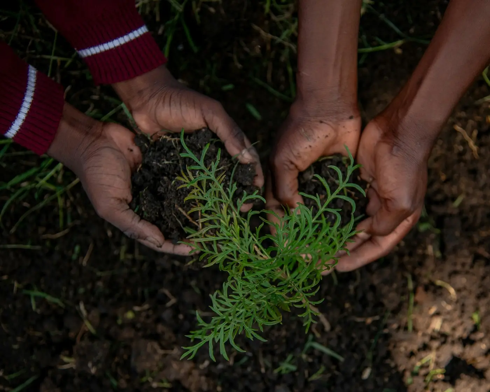
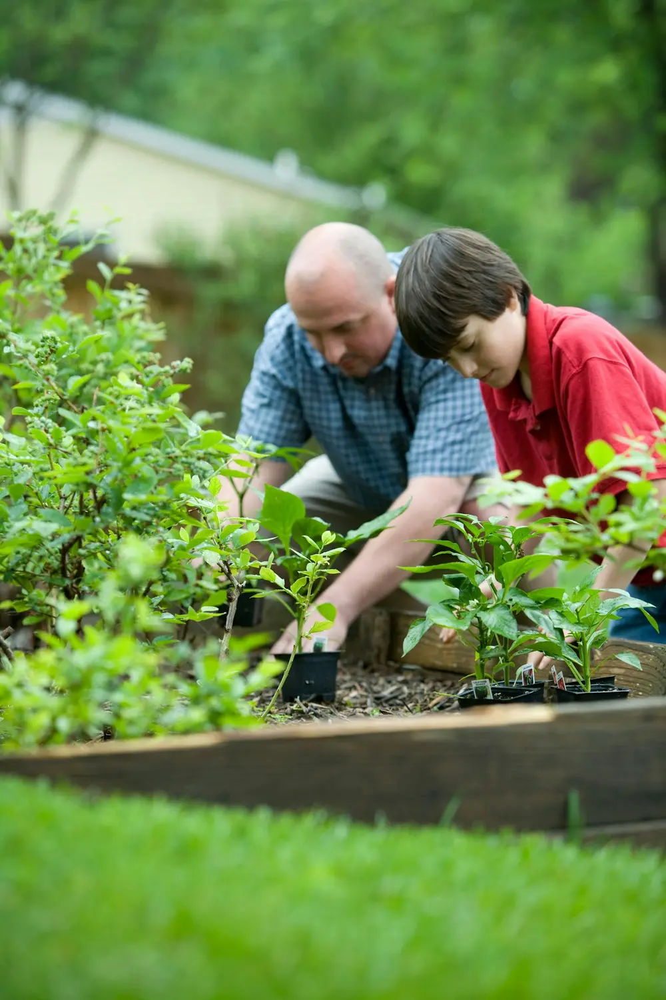
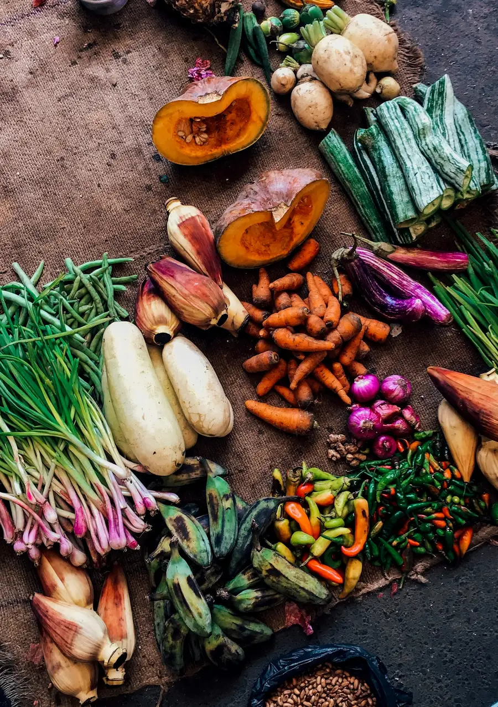
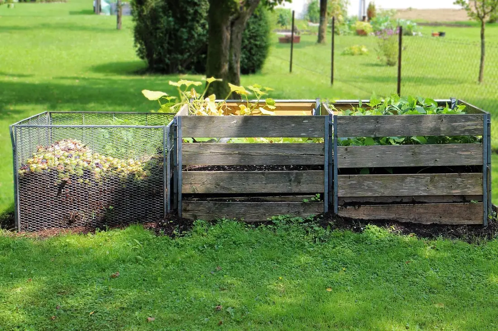
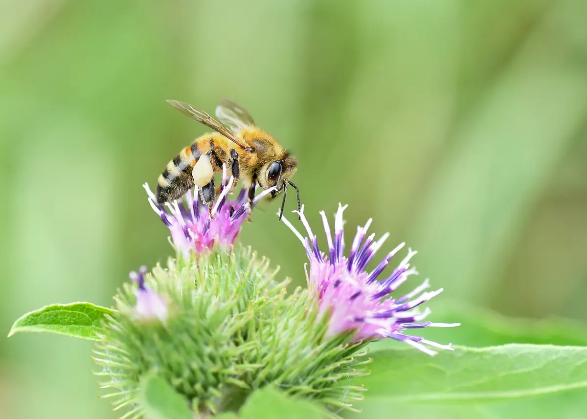
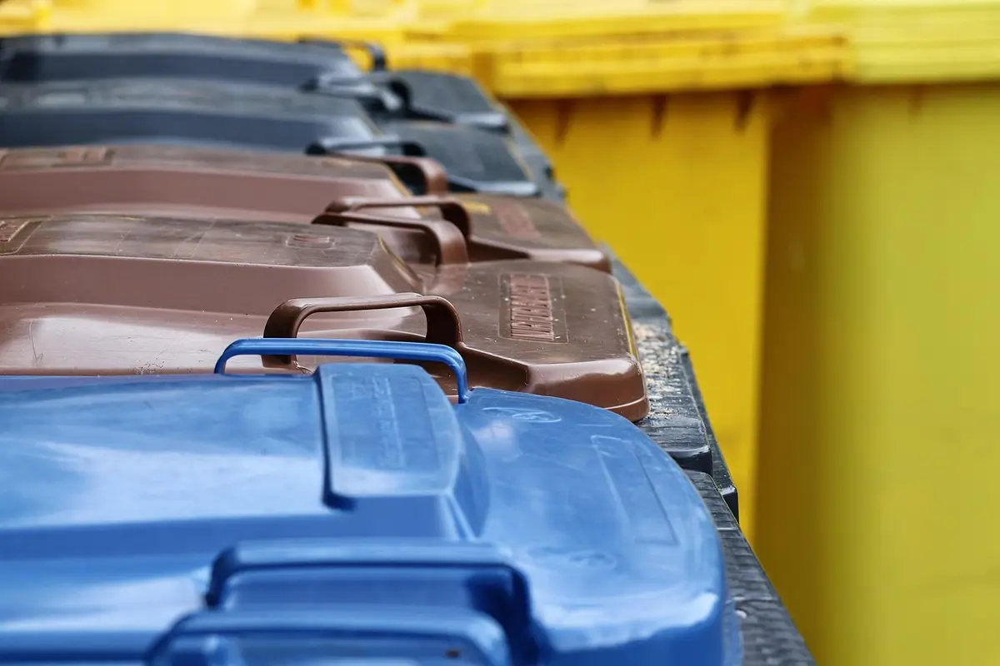
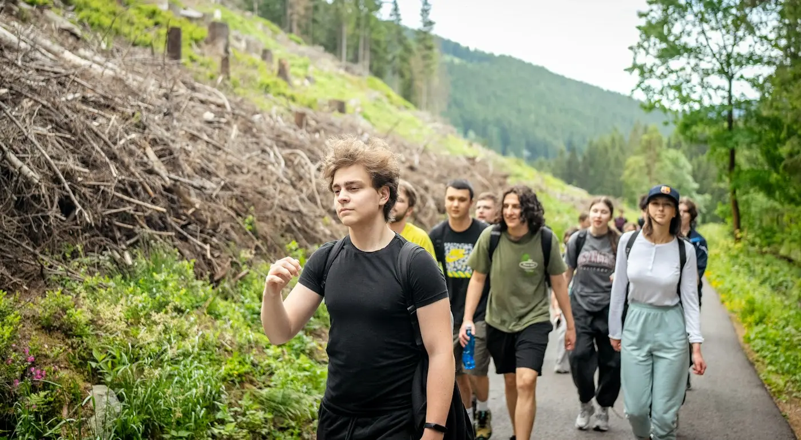
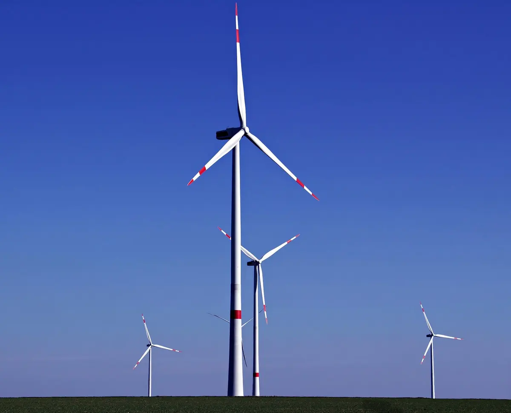
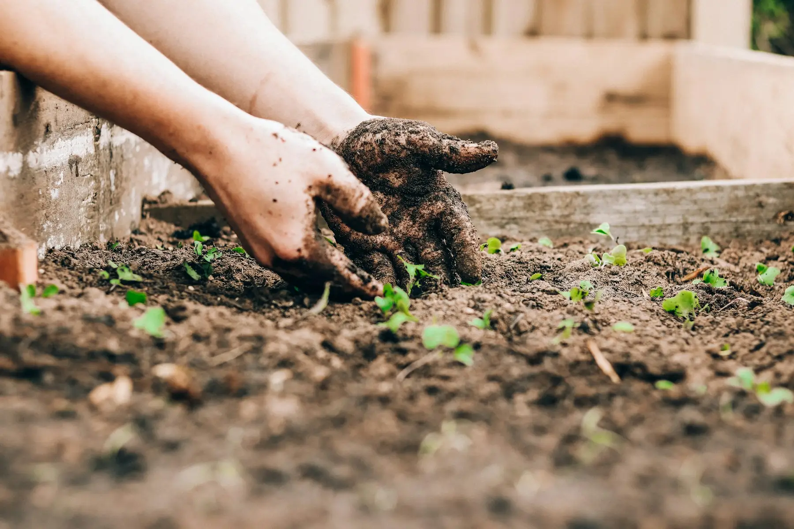

Sensibiliser, expérimenter, agir
Semer aujourd'huiles gestesde demain
L'Avenir Durable sensibilise et mobilise le public aux enjeux environnementaux et de développement durable, avec des ateliers, des activités et des actions concrètes.
Notre démarche
- Sensibiliser
- Expérimenter
- Agir
- Ancrer
- Recommencer
Le projet
Rendre l'écologie concrète
Les grands enjeux environnementaux se jouent aussi dans les petits gestes de tous les jours.
Un programme complet pour passer de la prise de conscience à l'action.
L'Avenir Durable est un projet qui vise à sensibiliser et à mobiliser le public aux enjeux environnementaux et de développement durable. Il propose des ateliers, des activités et des actions concrètes.
Son objectif : favoriser l'adoption de comportements écoresponsables dans la vie quotidienne. Les thématiques abordées couvrent un large éventail de sujets liés à la préservation de la planète.

Nos actions
Quatre façons d'agir
Des formats complémentaires, du déclic à l'habitude.
- Comprendre
Ateliers de sensibilisation
Des temps d'échange et de pratique pour comprendre les enjeux environnementaux et de développement durable.

- Expérimenter
Activités de découverte
Observer, manipuler, expérimenter : des activités pour apprendre en faisant.

- Agir
Actions concrètes
Passer de l'intention à l'action, ensemble, sur le terrain.

- Ancrer
Écogestes au quotidien
Faire des comportements écoresponsables de vraies habitudes, à la maison comme ailleurs.

Au quotidien
Des gestes simples, des effets durables
Composter, trier, consommer local, préserver le vivant : autant de sujets à explorer ensemble.






Questions fréquentes
Vous vous demandez peut-être…
Qu'est-ce que L'Avenir Durable ?
Un projet qui vise à sensibiliser et à mobiliser le public aux enjeux environnementaux et de développement durable. Il propose un programme complet d'ateliers, d'activités et d'actions concrètes pour favoriser l'adoption de comportements écoresponsables dans la vie quotidienne.
Quelles thématiques abordez-vous ?
Les thématiques couvrent un large éventail de sujets liés à la préservation de la planète et au développement durable, toujours reliés à des gestes concrets du quotidien.
Comment participer à un atelier ?
Écrivez-nous à avenirdurable@ecomail.fr en précisant votre ville et le public concerné. Nous vous indiquerons les prochaines dates et les modalités.
Pouvez-vous intervenir dans notre structure (école, association, entreprise, collectivité) ?
Présentez-nous votre projet et votre public par e-mail : nous étudierons ensemble le format le plus adapté.
Comment devenir bénévole ou proposer un partenariat ?
Écrivez-nous en précisant vos envies et vos disponibilités, ou la nature du partenariat envisagé.
Ce site collecte-t-il mes données ?
Non. Le site n'a pas de formulaire et ne dépose aucun cookie publicitaire ni de mesure d'audience. Le détail figure dans les mentions légales.

Envie de participer ou d'organiser un atelier ?
Écrivez-nous : nous construirons ensemble le format le plus adapté.
Nous écrireContact
Parlons de votre projet
Une question, une envie de participer, une idée de partenariat ? Écrivez-nous.
- avenirdurable@ecomail.fr
Par e-mail
Pour toute question sur le projet.
- Écrire pour participer
Participer à un atelier
Indiquez votre ville et le public concerné.
- Proposer mon aide
Partenariat ou bénévolat
Présentez-nous votre structure ou vos envies.